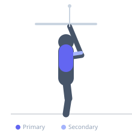
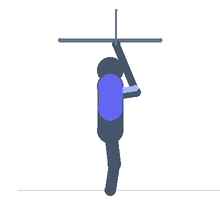

Exercise guide / Seated Cable Lat Pulldown — Facing Away from Stack
Seated Cable Lat Pulldown — Facing Away from Stack
A lat pulldown variation performed while seated facing away from the cable stack with a long bar or rope attached to the high pulley. The reversed orientation changes the angle of pull and places the shoulder in a different position relative to the resistance vector throughout the range, targeting the lower fibers of the latissimus dorsi and creating a unique stretch at the top position compared to a standard forward-facing pulldown. Used as a lat isolation variation to target different fibers and angles.
Primary muscles
latissimus dorsi
trapezius lower
Secondary muscles
biceps brachii long head
brachialis
rhomboid major
Stabilizers
transverse abdominis
Equipment
Cable Machine (High Pulley)


Starting position
- Sit on a bench or the floor facing away from a high cable pulley. Hold the bar or rope overhead with both hands and position the attachment just above and behind the head to create the reversed pull angle.
Setup
- Attach a straight bar or rope to the high pulley. Position a bench approximately 1-2 meters from the stack, facing away. The cable will pull from behind and above.
Steps
- Step 1: Sit facing away from the cable stack, holding the bar above head with arms extended.
- Step 2: Depress and retract the shoulder blades, then pull the bar down toward the chest (bar will travel from behind-and-above to in-front-of-chest).
- Step 3: Hold the contracted position with the bar at chest level, feeling the lower lat contraction.
- Step 4: Slowly return to the starting position. Repeat.
Coaching cues
- Depress the shoulder blades before you start the pull — do not shrug
- Think of pulling the elbows down and forward toward your hip pockets
- Feel the lower lats — this variation should produce a different pull sensation than a standard pulldown
Breathing
- Exhale during the pull. Inhale during the return.
Range of motion
- Full extension of the arms overhead at the top to full contraction with the bar at chest level.
Tempo
- 2s pull down, 1s contraction hold, 3s slow return.
Common mistakes
- Leaning forward excessively to assist the pull — maintain an upright torso
- Using momentum by swinging the torso
- Allowing the cable to pull the arms too far back past a comfortable overhead range
Safety
- The cable angle creates a different shoulder loading pattern — start with light weight to assess comfort
- Avoid if overhead extension causes shoulder impingement symptoms
Training
- hypertrophy: 8–15 reps
- hypertrophy: 2–4 sets
- Rest: {'hypertrophy': 90}